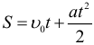
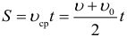
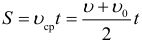

шпаргалки
-
Координата при равноускоренном движении изменяется по закону:

-
Средняя скорость пути:

-
Путь при равномерном движении:

Перемещение S (расстояние по прямой между начальной и конечной точкой движения) обычно находится из геометрических соображений. Координата при равномерном прямолинейном движении изменяется по закону (аналогичные уравнения получаются для остальных координатных осей):
-
Определение ускорения при равноускоренном движении:
Выразив из формулы выше конечную скорость, получаем более распространённый вид предыдущей формулы, которая теперь выражает зависимость скорости от времени при равноускоренном движении:

-
Проекция скорости при равноускоренном движении изменяется по такому закону:

-
Средняя скорость перемещения:

-
Средняя скорость при равноускоренном движении:
-
Перемещение при равноускоренном прямолинейном движении может быть рассчитано по нескольким формулам:
 
